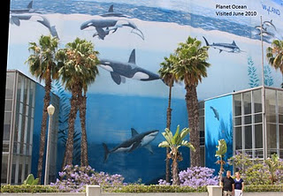

We found ourselves quite lucky when we got to the Long Beach Convention Center to find that there was no conference. The place was deserted and this make it quite each for us to go around the entire conference center and see the entire wall. If you go to the hotel next to the convention center you can go up to the 17th floor and from the hallway windows you can get a great overall view of the painting but unfortunately it’s still not high enough to be able to see the painting on the roof.
Long Beach Convention Center
1280 Feet Long x 105 Feet High
Dedicated July 9th, 1992
Excerpt from @wylandfoundation on Instagram
Planet Ocean is painted on the Long Beach Convention Center and measures a whopping 116,000 square feet! It is the world’s largest mural. Painted in 1992, this striking work of art was a gift to the city of Long Beach by Wyland, who completed the mural over a six-week time period with 200 volunteers. The wall is comprised of whales of various types (from orcas to blues), sea lions, dolphins, sharks, and a variety of fish.
FUN FACT: Every marine life animal on the mural is painted to the creature’s actual size.
Wyland painted his particular whale wall with the education of youth in mind. He stated at the time, “I think we have a real chance with the kids. It seems to me that kids know more and are more in tune with the environment than I ever was.” He goes on to describe the Long Beach wall as “a symbol of our environmental times,” encouraging us all to take a moment to reflect on the concept of “Planet Ocean.”